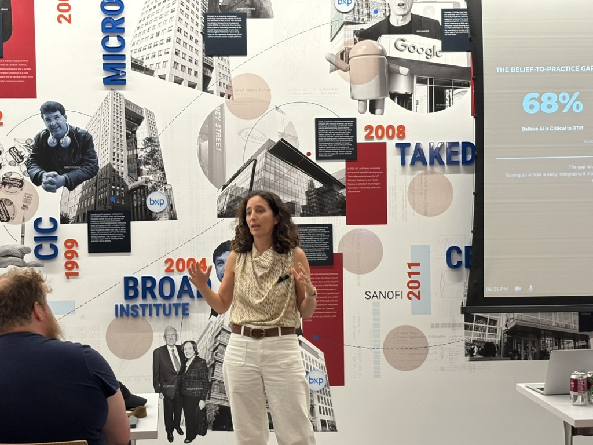

I help founders build a lean revenue engine, with AI doing the work of the team you haven't hired yet.
Engagements are built around where your GTM motion actually is today — starting with the right diagnosis, then moving deeper only when it makes sense.
A focused audit of your US market-entry readiness — ICP and positioning, sales process, early hires, and channel fit. You leave with a clear roadmap, not a deck that sits in a drawer.
Learn more →Ongoing strategic counsel for founders building a US revenue engine: pipeline reviews, hiring guidance, and direct support for the calls only a CRO should be making.
Learn more →Hands-on revenue leadership for a small number of select engagements. I step into the seat when the motion needs an operator who can own pipeline, team design, and forecast.
Learn more →I organize the AI Tinkerers GTM chapter in Boston, where founders and GTM leaders test what actually works when AI enters the revenue motion — from ICP research and outbound to enablement and pipeline operations.



Longer-form thinking on GTM leadership, organized into series rather than one-off posts.
What FDEs are, how the role differs from Sales Engineering, the metrics that prove it out, and how to build a team from the talent you already have.
Read the series →The next series — building and running a business with AI as leverage from day one. Check back soon.